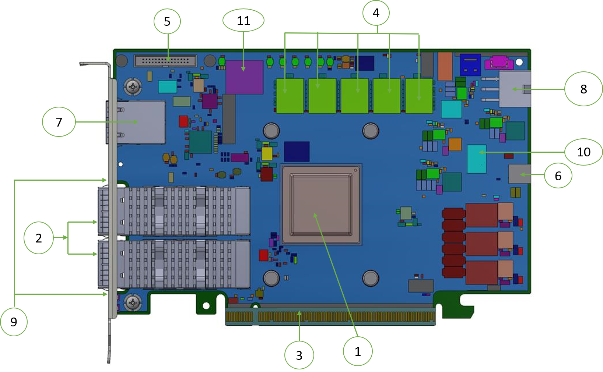
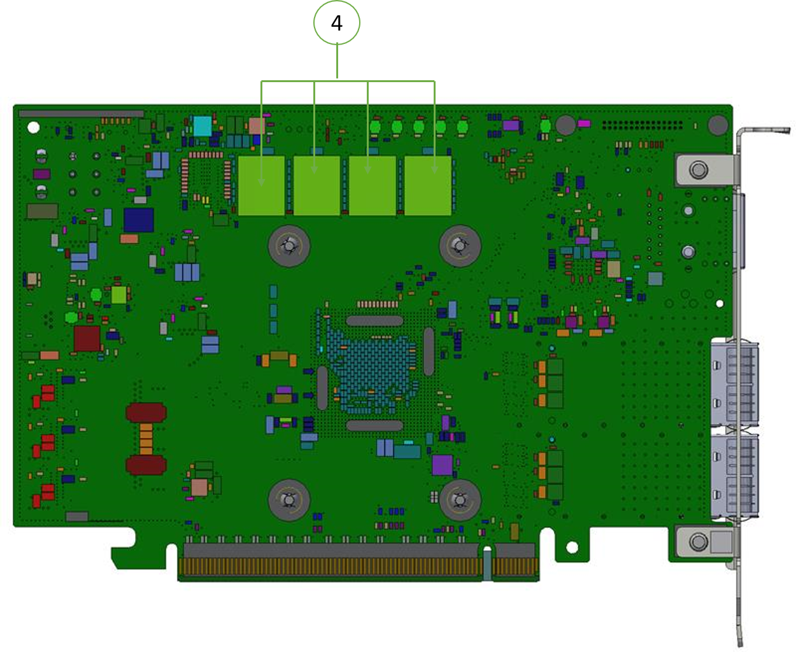
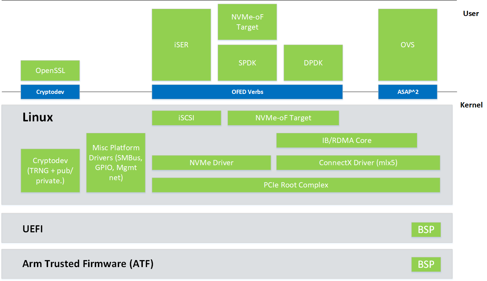
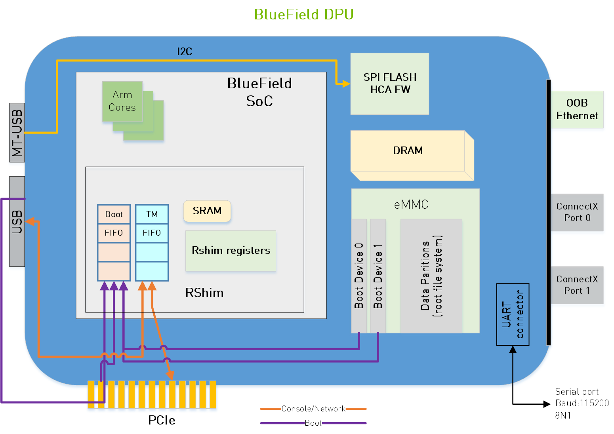
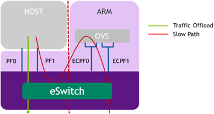
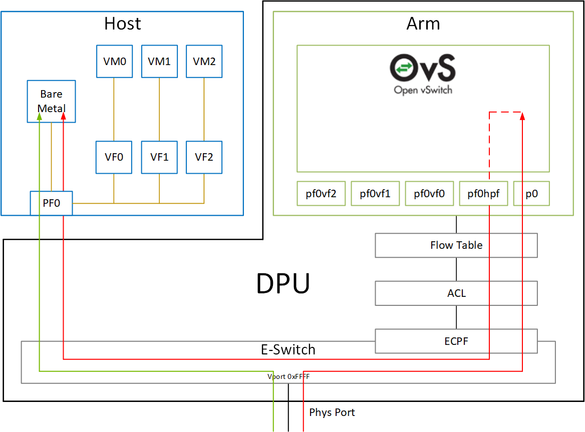
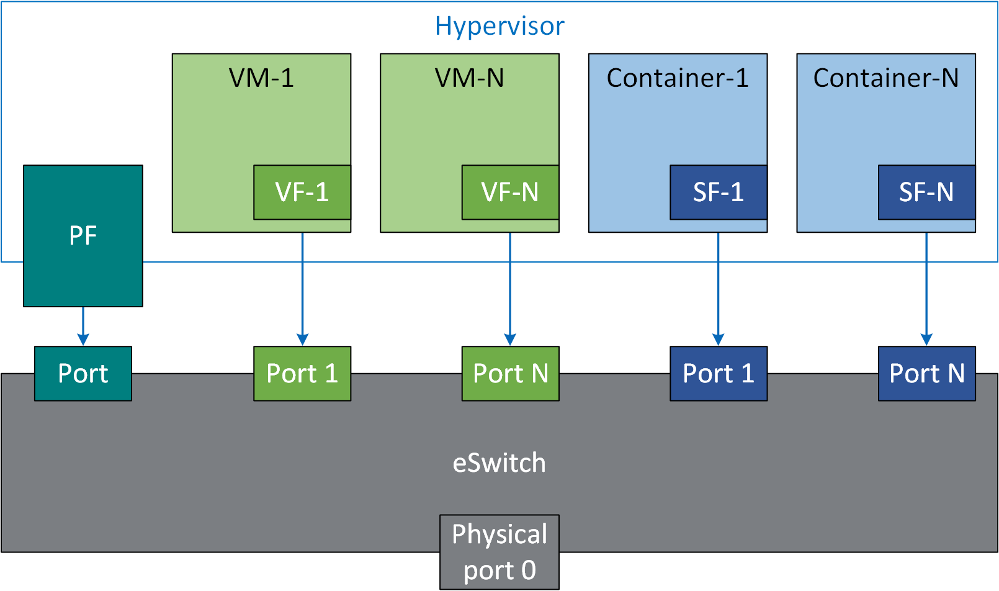
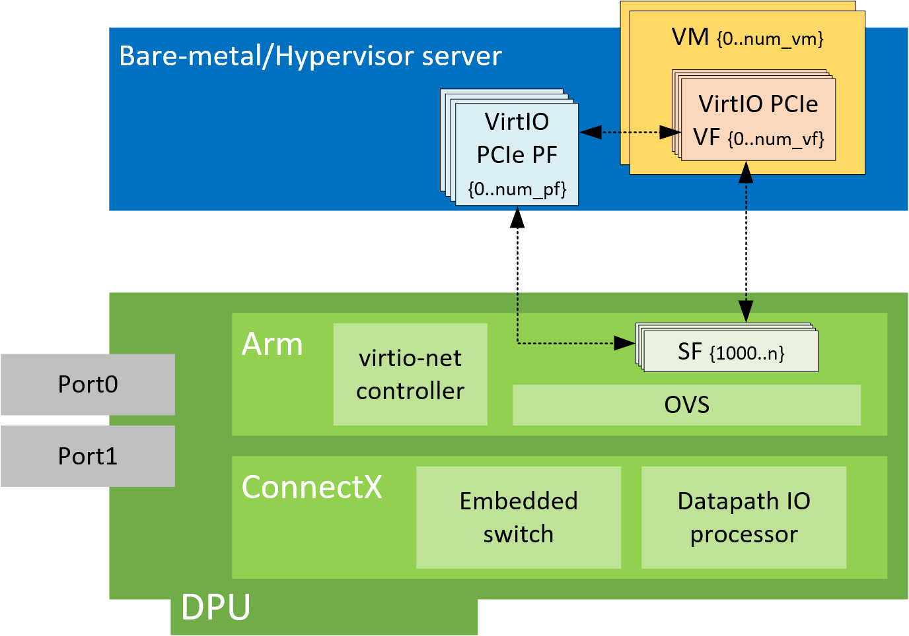

首先来看下BlueField2的官方硬件文档介绍 BF2硬件介绍文档，文档中对BF的硬件接口以及安装提供说明
下面两张图分别是BlueField2（MBF2M516A-EEEOT）正反面


下表来自上述文档，描述了BF2的一些硬件标准以及功能
| 特征 | 描述 |
|---|---|
| PCIe | PCIe4.0(16GT/s) 通过 x8/x16的插槽 |
| 最高200G的ETH端口 | 符合IEEE 802.3标准：200Gb/s / 100Gb/s / 50Gb/s / 40Gb/s / 25Gb/s / 10Gb/s / 1Gb/s |
| 板上存储 | QSPI NOR FLASH 包含256M Firmware image UVPS EEPROM eMMC x8 NAND flash 用于Arm boot，OS和硬盘空间 DDR4 SDRAM 8GB/16GB/32GB 3200MT/s 单通道DDR4 SDRAM 64bit+8bit ECC |
| BF2 DPU | 集成了8个64bit Armv8 A72核心，通过mesh网络互相连接。 一个RDM控制器，最高支持200Gb/s 一个嵌入的PCIe 交换机 |
| Overlay 网络 | 支持隧道封装，例如BVGRE和VXLAN |
| RDMA和ROCE | 提供低延迟高性能的网络 |
| Nvidia PeerDirect | 通过PCIe总线提供设备间的高效率的RDMA |
| 存储加速 | 为Host卸载特殊的存储任务 |
| NVMe-oF | 支持Nonvolatile Memory Express (NVMe) over Fabrics 加速 |
| SR-IOV | 支持SR-IOV，能够提供虚拟机的隔离和保护 |
| GPU直连 | 提供与GPU之间端到端的直连RDMA，可以极大的降低通讯中的延迟 |
| 加密 | 支持加密操作，Arm核心提供了bulk crypto的特殊指令，可以加速公钥加密和随机数生成 |
| 安全加速 | |
| Out-of-Band 管理 | 提供1GbE的out-of-band管理口 |
| BMC | |
| PPS IN/OUT | 提供IEEE 1588v2 PTP软件解决方案，保证低于20us的精度 |
BF2的软件相关说明文档详细的描述了BF2的软件安装步骤以及功能如何使用
下面我将挑选部分简单介绍一下这张卡。
Nvidia提供了DPU使用的丰富软件包：
BlueField 系列 DPU 设备将 64 位 Armv8 A72 内核阵列与 NVIDIA® ConnectX® 互连相结合。标准 Linux 发行版在 Arm 内核上运行，允许使用常见的开源开发工具。开发人员应该发现熟悉且直观的编程环境，这反过来又使他们能够快速有效地设计、实施和验证他们的控制平面和数据平面应用程序。
BlueField SW 随附 NVIDIA® BlueField® 参考平台。 BlueField SW 是一个基于 Ubuntu Server 发行版的参考 Linux 发行版，扩展后包括用于 Arm 的 MLNX_OFED 堆栈和支持 NVMe-oF 的 Linux 内核。该软件发行版可以无缝运行所有基于客户的 Linux 应用程序。
BlueField DPU 包括对 Arm DS5 套件的硬件支持以及 CoreSight™ 调试。因此，广泛的商用现成 Arm 调试工具应与 BlueField 无缝协作。 CoreSight 调试器接口可以通过 RShim 接口（USB 或 PCIe，如果使用 DPU）访问，也可以用于使用 OpenOCD 等开源工具进行调试。
BlueField DPU 还支持无处不在的GDB。
BlueField 软件为构建 JBOF（Just a Bunch of Flash）存储系统提供了基础，包括 NVMe-oF 目标软件、PCIe 交换机支持、NVDIMM-N 支持和 NVMe 磁盘热插拔支持。
BlueField SW 允许启用 ConnectX 卸载，例如 RDMA/RoCE、T10 DIF 签名卸载、纠删码卸载、iSER、存储空间直通等。
BlueField 架构是两个现有的标准现成组件、Arm AArch64 处理器和 ConnectX-5（用于 BlueField）、ConnectX-6 Dx（用于 BlueField-2）或网络控制器的组合，每个组件都有自己丰富的软件生态系统。因此，BlueField 中几乎所有程序员可见的软件接口都来自各个组件的现有标准接口。
Arm 相关接口（包括与引导过程、PCIe 连接和加密操作加速相关的接口）是 Arm 上的标准 Linux 接口。 这些接口由 NVIDIA 提供的驱动程序和低级代码启用，作为 BlueField 软件的一部分，该软件已交付并上传到相应的开源项目，例如 Linux。
ConnectX 网络控制器相关接口（包括用于以太网和 InfiniBand 连接、RDMA 和 RoCE 以及存储和网络操作加速的接口）与支持 ConnectX 独立网络控制器卡的接口相同。 这些接口利用 MLNX_OFED 软件堆栈和基于 InfiniBand 动词的接口来支持软件。
BlueField DPU 有多个连接（见下图）。 用户可以通过不同的控制台、网络连接和 JTAG 连接器连接到系统。

BlueField DPU 有多个控制台界面：
DPU 有多个网络接口:
下面我将挑选一些比较重要的或者有意思的特性介绍给大家
DPU卡上的资源和功能被Arm系统所控制，Host可以看见网口，但是只能对它进行有限的操作
所有与Host的网络连接都通过Arm系统的OVS进行转发，DPU与Host的通信需要在OVS加载后才能进行。
只有两种方法将流量传递到主机接口:
受限模式是嵌入式模式的一种特殊化，它实现了一个额外的安全层，防止主机系统管理员从主机访问 DPU。 启用受限模式后，数据中心管理员应完全通过 Arm 内核和/或 BMC 连接而不是通过主机来控制 DPU。
出于安全和隔离目的，可以限制主机执行可能危及 DPU 的操作。将 DPU 主机更改为受限模式时，可以单独限制以下操作：
在该模式下，将Network Function分配给 Arm 内核和 x86 主机内核。在流量同时发送到两个PF的场景中，端口/功能是对称的。这些Function每一个都有自己的 MAC 地址，允许一个与另一个通信，并且可以发送和接收以太网和 RDMA over Converged Ethernet (RoCE) 流量。 这两个功能之间的带宽份额相等。
这两个Function之间没有依赖关系，它们可以同时或单独运行。主机可以作为两台独立的主机与嵌入式Function进行通信，每台主机都有自己的 MAC 和 IP 地址（配置为标准接口）
在分离模式下，主机管理员是一个可信赖的参与者，可以执行与任一网络Function相关的所有配置和管理操作。
此模式启用相同的 SmartNIC 操作模型（没有单独的控制平面）。 在这种情况下，Arm 控制平面可以用于不同的Function，但对主机转向Function没有任何控制。
该模式的局限性如下：
BlueField® DPU 使用 netdev representor来映射每个主机端物理和虚拟功能：
这些representor用作连接到 OVS 或在 Arm 核心上运行的任何其他虚拟交换机的虚拟端口。
在 ECPF 所有权模式下，我们看到 DPU 的每个网络端口有 2 个representor：一个用于上行链路，另一个用于主机端 PF（即使未在主机端探测 PF，也会创建 PF 表示器）。对于在主机端创建的每个 VF，将在 Arm 端创建相应的representor。表示器的命名约定如下：
下图显示了在主机端暴露的 PCI Function与representor之间的映射。
Host上网口的MTU必须设置的比uplink和对应的representor的MTU要小。
可以通过以下命令关闭和激活pf与vf的representor:
1 | mlxconfig -d /dev/mst/mt41686_pciconf0 s NUM_Of_PF=0 |
可扩展功能 (SF) 是一种轻量级功能，具有部署它的父 PCIe 功能。一个 mlx5 SF 有自己的Function能力和自己的资源。 这意味着 SF 有自己的专用队列（txq、rxq、cq、eq），这些队列既不共享也不从父 PCIe 功能中窃取。
使用 SF 不需要系统 BIOS 的特殊支持。 SF 与 PCIe SR-IOV 虚拟功能共存。 SF 不需要启用 PCIe SR-IOV。
 在外部控制器（例如 DPU）上添加 SF 时，用户必须提供控制器编号。 在单主机 DPU 的情况下，只有一个控制器从 1 号控制器开始。 PS：SF number ≥1000 is 为 virtio-net controller 保留。待补充
此功能使用户能够在连接了 NVIDIA® BlueField®-2 DPU 的系统中创建 VirtIO-net 模拟 PCIe 设备。 这是由 DPU 中的 virtio-net-controller 软件模块完成的。 Virtio-net 仿真设备允许用户在插入 DPU 的主机系统中热插拔多达 16 个 virtio-net PCIe PF 以太网 NIC 设备或 504 个 virtio-net PCIe VF 以太网 NIC 设备。
Virtio-net-controller 是一个运行在 DPU 上的 systemd 服务，带有一个用户界面前端来与后台服务进行通信。 为主机上创建的每个 virtio-net 设备创建一个 SF 表示器。 Virtio-net 控制器仅使用 SF 编号≥1000。 有关详细信息，请参阅“可扩展函数”部分。
只支持静态创建的PF，暂时不支持热插拔的PF
